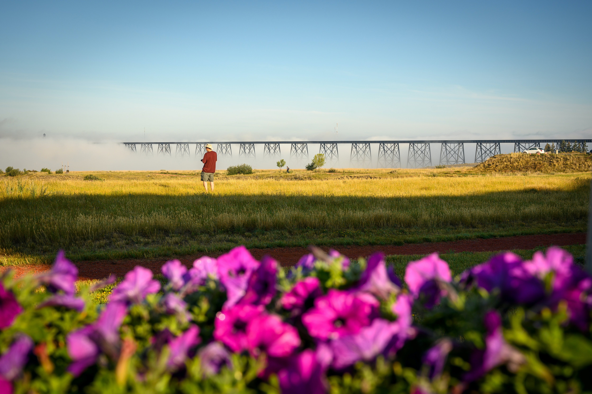

Lethbridge is a city in the province of Alberta, Canada and it’s a small town. The Rocky Mountains and Lethbridge lies southeast of Calgary. And the population of 101,324 people in 2020 and friendly people and Viaduct or known as High-Level Bridge is over the Oldman River. The bridge was done building it in 1909. The weather in Lethbridge is warm in summers, winters are freezing, and it is windy.
Lethbridge provides a lot of activities and employment opportunities for its residents and fun for visitors. There are many things to enjoy, awesome places Southern Alberta Art Gallery and visit the Waterton Lake Nation Park and these are some of my favorite’s place to visit in the town are Henderson Lake or the Indian battle park and Japanese garden I love these places because of the beautiful sunset they have.